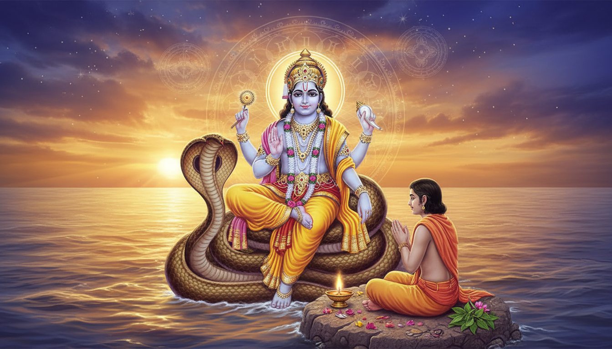

1. Introduction: The "Master Key" of Vedic Fasting
Among the twenty-four Ekadashis that occur annually within the Vedic calendar, Nirjala Ekadashi stands as the ultimate "Master Key." The term "Nirjala" literally translates to "without water," signifying an absolute fast where even a single drop is prohibited. Within the spiritual geometry of the year 2026, this day is not merely a religious observance but a profound Metaphysical Portal.

As a Spiritual Wellness Strategist, I view this window as a rare opportunity for karmic "bio-hacking." The Brahma-Vaivarta Purana promises that observing this single fast with absolute devotion provides the combined spiritual merit (Punya) of all twenty-four annual Ekadashis. For those who find consistent discipline challenging, the June 2026 window offers a concentrated 32-hour and 48-minute gateway to reset the cellular and karmic body entirely.
2. Chronology of the 2026 Portal: Exact Dates and Timings
The 2026 corridor occurs during the Vedic year of Parabhava Samvat (Shaka 1948). This specific year governs a high-frequency karmic resonance, making the 11th lunar day (Tithi) of the waxing phase (Shukla Paksha) exceptionally potent.
While the Smarta tradition observes the fast based on the Udaya Tithi (sunrise) on Thursday, June 25, the Vaishnava tradition (including ISKCON) shifts the absolute fast to Friday, June 26, due to a pre-dawn Dashami overlap. This creates a "Maha-Dvadashi" effect—a merit-multiplier that spans the transition into the twelfth lunar day.
The June 2026 Temporal Window (IST / Delhi-NCR Coordinates)
| Event | Date & Time (IST) | Significance |
|---|---|---|
| Ekadashi Tithi Start | June 24, 2026, 6:12 PM | Initiation of the 11th lunar frequency. |
| Ekadashi Tithi End | June 25, 2026, 8:09 PM | Astronomical conclusion of the lunar day. |
| Gayatri Jayanti Overlap | June 25, 2026 (All Day) | Consecration of the mind via Vedic Wisdom. |
| Specified Practice Portal Start | June 25, 2026, 9:07 PM | Commencement of the deep nocturnal vigil (Jagaran). |
| Vaishnava Fasting Core | June 26, 2026 (All Day) | The absolute waterless phase for peak purification. |
| Parana Window (Fast Breaking) | June 27, 5:26 AM – 10:05 AM | Bridging restriction to divine nourishment. |
| Portal Peak/Conclusion | June 27, 2026, 5:55 AM | Ideal moment for transition and metabolic reset. |
3. The Legend of Bhima: Why This Fast Was Created for the "Imperfect" Devotee
The origin of this fast is rooted in a dialogue between Bhima—the second Pandava brother and a legendary warrior—and the sage Ved Vyasa. Despite his devotion, Bhima possessed a physiological constitution that made standard fasting impossible. He confessed that his hunger was unbearable, a result of a specialized digestive fire known as Vrika.
Sage Vyasa explained that Agni (fire) exists in three macro-manifestations:
- Davagni: Elemental fire bound within organic wood.
- Jatharagni (Vrika): The internal metabolic furnace of the gut, which required constant fuel for a warrior of Bhima’s strength.
- Vadavagni: The subaquatic ocean fire that balances global temperatures and generates mist.
Acknowledging Bhima’s limitation, Vyasa provided a "Spiritual Workaround": an absolute, waterless fast on Jyeshtha Shukla Ekadashi. Because this single performance carries the weight of the entire year's fasts, it is known as Bhimseni Ekadashi. It is specifically designed for the "imperfect" devotee—those who struggle with consistent discipline but possess sincere, burning devotion.
4. Astrological Dynamics: Harnessing the 2026 Planetary Alignments
The 2026 gateway is uniquely pressurized by planetary transits that support asceticism while testing mental resilience:
- Jupiter (Guru) in Pushya Nakshatra: Entering June 18, Jupiter provides a blanket of divine wisdom and cosmic protection, amplifying the expansion of consciousness.
- Gayatri Jayanti (June 25): The initiation of the portal overlaps with the celebration of the "Mother of the Vedas," making mantra japa exponentially more effective for mental clarity.
- The Shukra-Shani Trine: A 120° aspect on June 25 provides the physical stamina and stability required to sustain a waterless vow.
- Surya-Chandra Vaidhriti Yoga: Occurring June 26, this yoga can induce mental chaos and psychic drains. Dry fasting acts as an energetic shield, converting this restlessness into a theta-frequency brainwave state of deep meditation.
Metaphysical Remedial Protocols
- For Jupiter’s Wisdom: Wear yellow attire and recite the Vishnu Sahasranama.
- For the Venus-Saturn Trine: Establish a clear Sankalp (intent) and perform silent meditation at the altar.
- For Vaidhriti Yoga: Block psychic drains by chanting the Dwadasakshari Mantra and avoiding gossip.
- For Shani Trayodashi & Ancestral Healing: On June 27, offer water from a copper vessel to the Sun. Feed cows, birds, or dogs, and donate hand fans, umbrellas, or earthen pots to laborers to alleviate Pitru Dosha.
5. Liturgical Orthopraxy: How to Perform the Fast Properly
To achieve the "Maha-Dvadashi" merit, follow the Vrat Vidhi with liturgical precision:
- Preparation (Dashami - June 24): Eat a single, light sattvic meal before sunset to clear the colon and prime metabolic enzymes.
- The Vow (Ekadashi - June 26): Rise during Brahma Muhurta (3:50 AM – 5:26 AM). Set a yellow-cloth altar with a cow-ghee lamp.
- Puja: Perform Abhisheka (sacred bath) for a Lord Vishnu idol or Shaligrama using Panchamrita. Offer fresh Tulsi leaves.
- The Vigil (Jagaran): Remain awake during the night of the 26th, utilizing the theta-state for chanting and reading the Bhagavad Gita.
- The Law of Achamana: Ritual purification permits a minute volume of water, defined as the size of a single mustard seed or a drop of gold.
WARNING: The volume for Achamana must be sipped from the right palm, shaped to resemble a cow’s ear. Consuming more than this micro-volume is spiritually equivalent to drinking wine and immediately breaks the fast.
6. Vastu and Material Alignment: Consecrating Home and Property
Purifying the "internal temple" (the body) facilitates the dissolution of latent Vastu Dosha (spatial blockages) in the "external temple" (the home). The 2026 corridor offers specific material milestones:
- Wednesday, June 24: Favorable for Griha Pravesh (housewarming) to align the home’s energy with the coming fast.
- Thursday, June 25 (Vishakha Nakshatra): Auspicious for property registrations and signing contracts under the dual energy of Gayatri Jayanti.
- Friday, June 26 & Saturday, June 27 (Anuradha Nakshatra): Under Saturn’s stabilizing influence, these dates are excellent for moving into a residence or laying foundation stones to ensure long-term stability and ancestral blessings.
7. Safe Integration: The Refeeding Protocol
Breaking a waterless fast requires a "Wellness Strategist" approach to avoid metabolic shock and abdominal pain. The system has been in a state of pancreas rest and cellular autophagy; it must be re-primed carefully on Saturday, June 27, ideally at 5:55 AM IST.
The Sequential Refeed:
- Tulsi-Infused Water: Sip first to introduce divine vibration and micro-hydration.
- Electrolyte Restoration: Consume fresh coconut water or lemon water to replenish extracellular fluids.
- Metabolic Re-Priming: After 2-3 hours, consume a light, watered-down khichdi or boiled potatoes. This allows digestive enzymes to return to baseline without overwhelming the system.
8. Conclusion: The Transformational Promise
The successful execution of the Nirjala Ekadashi vow offers profound soteriological rewards. According to the Garuda Purana, those who complete this gateway are exempted from the judgment of Yama (death) and are instead met by Vishnudutas to be escorted to Vaikuntha, the supreme abode.
Takeaway Checklist:
- Sankalp: State your clear intent before June 25, 9:07 PM.
- Charity: Donate hand fans and earthen pots; feed animals to balance karma.
- Mantras: Prioritize the Gayatri Mantra and the Dwadasakshari Mantra (Om Namo Bhagavate Vasudevaya).
- Achamana: Remember the "cow’s ear" hand position and the mustard-seed limit.
By surrendering physical needs, you trigger a deep cellular and karmic rejuvenation, emerging from the 2026 gateway with a purified spirit and an expanded consciousness.
Sources
35. Source 36%20for%2024%20hours.&text=If%20unable%20to%20observe%20Nirjala,%2Fmilk%20(Phalahar)%20fast.&text=Strictly%20avoid%20grains%2C%20pulses%2C%20and%20beans.)
- Nirjala Ekadashi - iandKṛṣṇa
- Nirjala Ekadashi 2026: Time, Date, Importance of charity
- Nirjala Ekadashi Vrat Katha: Story of Bhima & Vyasa | Art of Puja
- Ekadashi in June 2026: Parama & Nirjala Dates, Timings, Significance
- Nirjala Ekadashi 2026: Vrat Vidhi, Significance, Puja Rituals & Benefi | Vedic Vaani
- ISKCON Ekadashi calendar 2026: Check month-wise Ekadashi tithi and timings - Astrovibes
- Nirjala Ekadashi - Wikipedia
- Nirjala Ekadashi: 3 Powerful rituals to perform on this sacred day - The Times of India
- NIRJALA EKADASHI - The Indian Panorama
- Pandava Nirjala Ekadashi - Vrindavan Chandrodaya Mandir
- Nirjala Ekadashi : The Most Powerful Ekadashi of Lord Vishnu - Digveda
- Nirjala Ekadashi 2025: A Powerful Fast That Can Change Your Life - Rudralife
- Nirjala Bhima Ekadashi - Komilla Sutton
- Observing Nirjala Ekadashi Fast Guide | PDF - Scribd
- The Benefits of Fasting on Ekadashi: Waterless vs. Fruit-Based Fasts - Online in India
- Pandava Nirjala Ekadashi 2025 – Health & Spiritual Benefits of Fasting - Hare Krishna Mandir
- Drik Panchang - online Hindu Almanac and Calendar with Planetary Ephemeris based on Vedic Astrology.
- Home - bbtirtha
- June Festivals 2026: Celebrations, Dates & Significance - Astroyogi.com
- Spiritual news, Mythology, Piligrimage news and Upcoming Festival Dates - The Times of India
- Festivals in June 2026: Check complete list of Purnima, Ekadashi, Amavasya, Trayodashi and other important days - The Times of India
- Nirjala Ekadashi 2026: Date, Parana Time, Fasting Rules & Puja Vidhi - GaneshaSpeaks
- A Beginner's Guide to Ekadashi Fasting: Rules, Dos, and Don'ts - Online in India
- How to Observe Nirjala Ekadashi | Step-by-Step Guide - YouTube
- Ekadashi Fasting - Everything you need to know | ISKCON Dwarka
- Nirjala Ekadashi | Meaning, Katha, & Benefits Explained - Cottage9
- Parama Ekadashi 2026: Date, Puja Timings, Fasting Rules & Significance - Indian Eagle
- Dwadashi Tithi 2026 – Dates, Auspicious Time And Festivals June 17, 2026, Wednesday - Astroyogi.com
- Griha Pravesh Muhurat in 2026: Best & Most Auspicious Dates with Shubh Timings - MagicBricks
- Auspicious Dates for Property Registration in 2026 - MagicBricks
- NORTH AMERICA ENGLISH PANCHANGAM 2026-27 - ::Sri Venkateswara Temple::
- Wednesday, June 17, 2026 — Today's Panchang | Aaj Ka Panchang | Ishvaram
- Nirjala Ekadashi 2026: Dates, Meaning, Vrat Katha & Puja Vidhi
- June 2026 Ekadashi Dates: When should you fast this month ...
- Calendar | Maninagar Shree Swaminarayan Gadi Sansthan
- Calendar - bbtirtha
- Hindu Vrat Calendar 2026: Monthly Fasting Dates & Significance - Talkndheal
- Hindu Calendar - Jai Durga Temple
- Holika Dahan 2026: Date, Time, Muhurat And Rituals - Astroyogi.com
- Sacred Rituals & Devotion of India by Dharmikvibes - Substack
- The 84 Mahadev Temples of Ujjain: A Sacred Pilgrimage - Podtail
- RP 1946se | PDF - Scribd
- Griha Pravesh Muhurat 2026: Month-Wise Dates & Next Auspicious Timings
- June 2026 Hindu Festivals: Parama Ekadashi, Mithuna Sankranti, Nirjala Ekadashi & Jyeshtha Purnima Dates, Timings and Significance - The Economic Times
- विवाह पंचांग 2026: शुभ विवाह मुहूर्त और तिथियाँ | TALKNDHEAL
- Nag Panchami 2026 Date and Puja Muhurat - festival - Astroyogi.com
- Pandava Nirjala Ekadasi 2026 Donation | Offer Seva at ISKCON Vrindavan
- ISKCON Ekadashi Calendar, Ekadashi Calendar 2026-2027 - Hare Krishna Mandir
- Ekadashi 2026 Dates, Fast Rules, Katha, Mantra & Puja Vidhi - Anytime Astro
- Raksha Bandhan 2026 - Shubh Muhurat Date & Time to Tie the Rakhi - Astroyogi.com
- 2026 Drik Panchang Iskcon Festivals v1.0.1 | PDF | Theistic Indian Philosophy - Scribd
- Nirjala Ekadashi 2026 - Muhuratam
- Nirjala Ekadashi 2026 Date: Know significance, puja timings, fasting rules, rituals and parana time - The Economic Times
- When is Nirjala Ekadashi 2026? Know exact date, parana time and significance
- Why Nirjala Ekadashi is considered the most auspicious Ekadashi—and when it falls in 2026 - The Times of India
- Dry Fasting: Purported Benefits, Risks, and Complications - Healthline
- Auspicious Dates for Marriage in June 2026 - The Wedding Company
- Property Purchase & Registration Muhurat Dates 2026 - Moving Solutions
- Dwadashi Tithi 2026 - Subh time, Fasting Calendar & More - Astrotalk
- Today's Panchang 27 May 2026, Wednesday, "Padmini Ekadashi - Reddit
- Festivals in June 2025: Check Monthly Calendar - The Times of India